Tere tulemast Tallinna Ülikooli täiendusõppe infosüsteemi töölauale!
Võimalikele tekkinud küsimustele leiab vastused järgneva juhendiga tutvudes!
Töölauale on välja toodud enim kasutatavad ja vajaminevad andmed täienduskoolituse juhi tööülesannete täitmiseks.
Tabeleid on kokku neli, milles on erinevad andmed välja toodud ja lisatud mõned lingid, et kiirendada tööprotsessi.
Tabeli andmed on sorteeritud kuupäeva järgi – kõige üleval on kõige viimasena sisestatud õppekava.
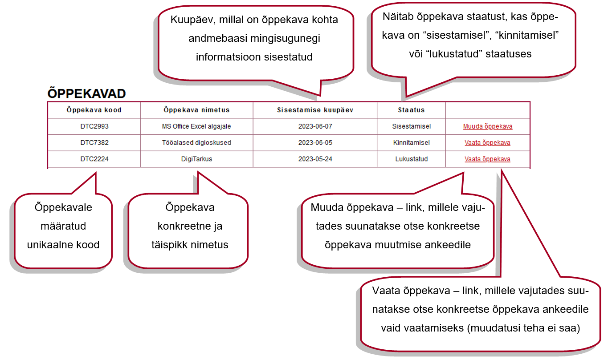Tabeli andmed on sorteeritud kuupäeva järgi – kõige üleval on kõige varasema maksetähtajaga arve.
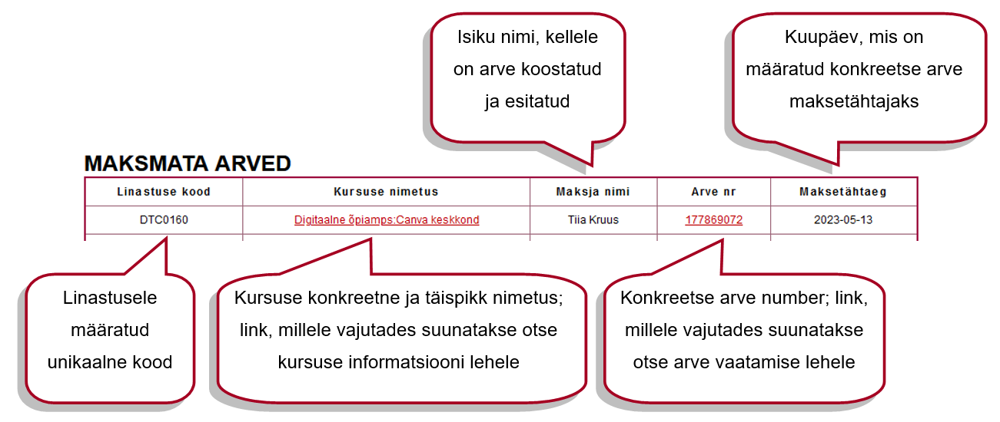Tabelisse kuvatakse kursused, mille linastuse kuupäev on järgneva 8 päeva jooksul ning andmeread sorteeritakse kuupäeva järgi – kõige üleval on kursus, mis ei ole veel alanud ning mille kuupäev on kõige varasem (kui samal kuupäeval algab mitu kursust, sorteeritakse need omakorda tähestikulises järjekorras).
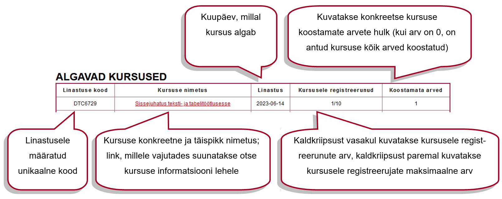Tabelisse kuvatakse kursused, mis on lõppenud viimase kaheksa päeva jooksul ning andmeread sorteeritakse kuupäeva järgi – kõige üleval on kursus, mille kuupäev on kõige hiljutisem. Andmerida püsib tabelis kaheksa päeva pärast “koostamata arved” lahtrisse 0-i tekkimist.
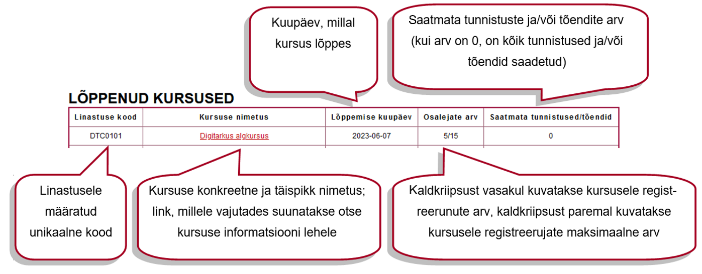Kui süsteemi lisatakse uus õppekava või kursus, teavitatakse sellest kasutajat. Teadete ikoonile tekib punane täpp, mille sees number – number tähistab lugemata teadete arvu. Teated sorteeritakse kuupäeva järgi - kõige üleval on teade, mille kuupäev on kõige hiljutisem.
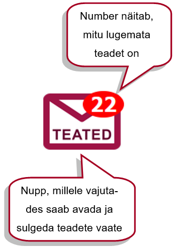 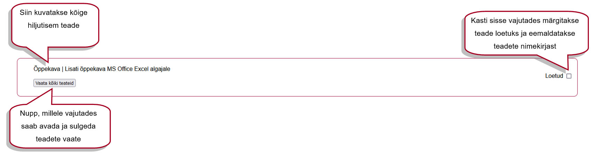 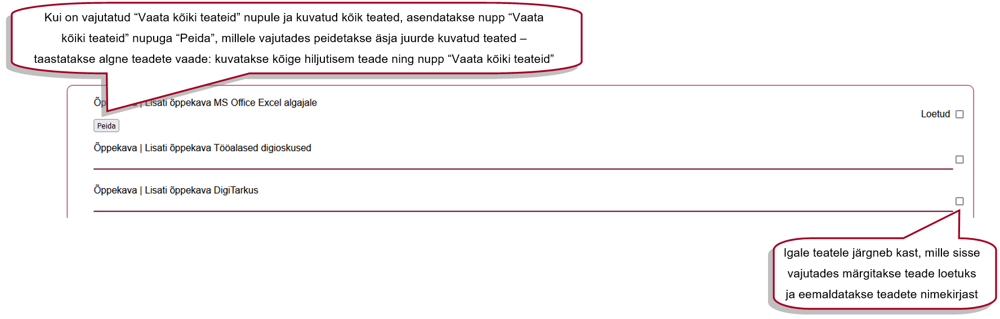Kõikides tabelites on andmeridade limiit 5, mis on määratud kliendi soovil arenduse käigus. Kui tabelisse sobivaid vasteid on rohkem kui limiidiga määratud, tekib tabeli alla nupp “Vaata veel”, millele vajutades kuvatakse siiski kõik tabelisse sobivad vasted.
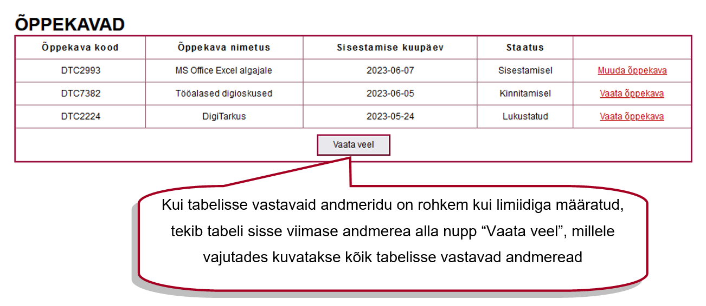 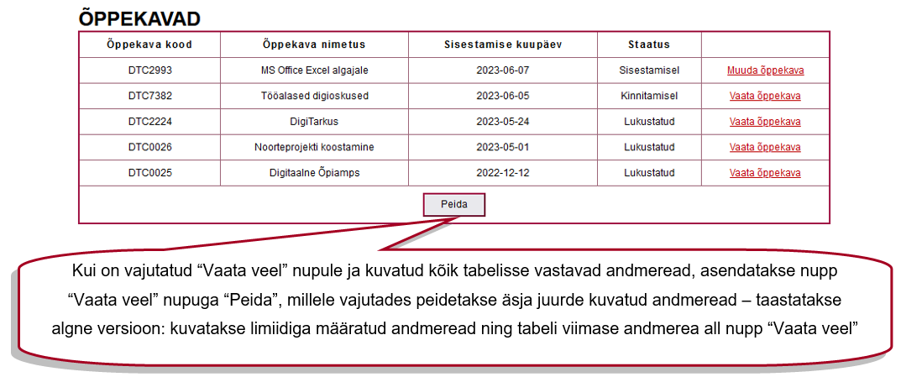Kiiresti töölauale saamiseks on vasakul üleval logo all maja ikooniga nupp.
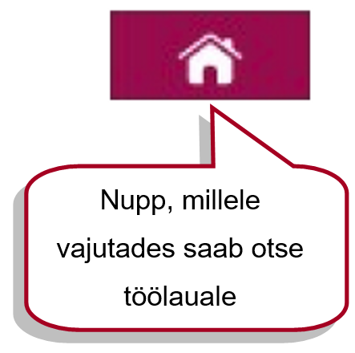Süsteemist väljalogimiseks on lehekülje üleval paremal punane nupp.
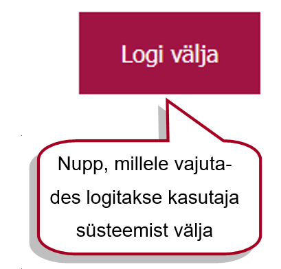